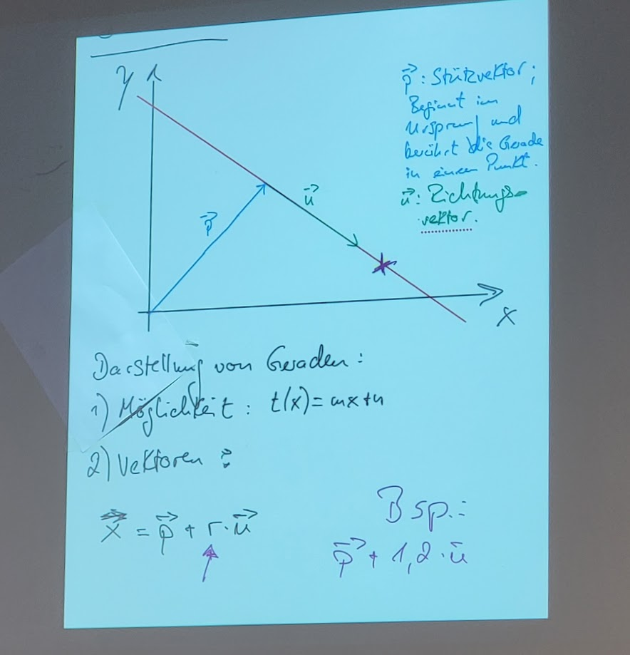
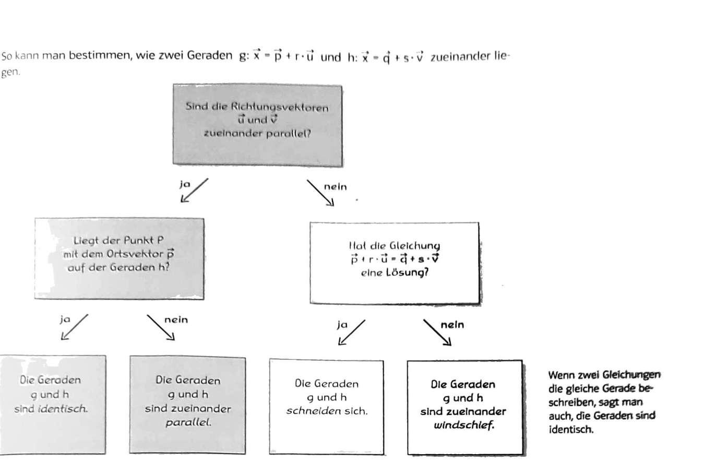

und hat sowohl eine Richtung als auch einen Betrag. Sie können außerdem theoretisch unendlich viele Dimensionen haben.
5.1.2 Beträge
Sie haben sowohl eine Richtung als auch einen Betrag, welcher wie folgt errechnet wird: \[\vec{v} = \sqrt{x^2 + y^2 + z^2}\] Was in unserem Fall folgendes heißt: \(\sqrt{2^2+4^2+6^2}=7,48\)
5.1.2.1 Addition
Vektoren zu addieren ist denkbar einfach, wie hier: \[\begin{bmatrix}4\\-1\\2\end{bmatrix}+\begin{bmatrix}3\\2\\-4\end{bmatrix}=\begin{bmatrix}7\\1\\-2\end{bmatrix}\] Wie vielleicht zu erkennen ist, werden jediglich die Werte der selbigen Dimensionen addiert, was heißt: \[\begin{bmatrix}x_1\\y_1\\z_1\end{bmatrix}+\begin{bmatrix}x_2\\y_2\\z_3\end{bmatrix}=\begin{bmatrix}x_3\\y_3\\z_3\end{bmatrix}\]
Abbildung 5.3: Wie Vektoren Graphisch addiert werden können
5.1.3 Subtraktion
Subtraktion von Vektoren ist praktisch identisch zur Addition
5.1.4 Multiplikation mit Skalaren
Um diese Art der Multiplikation zu verstehen muss der Begriff Skalar verstanden werden, der einfach nur heißt: Zahl welche mit Vektoren verrechnet wird und kein Vektor ist
Als Beispiel nehme ich jetzt mal \(\vec{a}=\begin{bmatrix}2\\2\end{bmatrix}\) und \(\begin{bmatrix}2\\2\end{bmatrix}*2=\begin{bmatrix}4\\4\end{bmatrix}\)
Mit Vektoren können Geraden ähnlich wie mit der “normalen” Formel \(t(x) = mx+n\) berechnet werden. Nur ist die Formel hier \(x = \vec{p} + r * \vec{u}\)
\(\vec{p}\): Stützvektor
Beginnt im Ursprung und berührt die Gerade in einem Punkt
\(\vec{u}\): Richtungsvektor
liegt auf der Gerade, Richtung ist egal

Hier ein Beispiel für einen Vektor der eine Gerade bestimmt: \(g: \vec{x} = \begin{bmatrix} 1 \\ -3 \end{bmatrix} + t * \begin{bmatrix}2 \\ 2\end{bmatrix}\)
5.1.5.1 Beispiele von Geraden als Vektoren
Formel: \(g: \vec{x} = \begin{bmatrix}1\\1\\2\end{bmatrix} + t * \begin{bmatrix}0\\-2\\7\end{bmatrix}\)
Jede andere Zahl als hier als Skalar für \(t\) einsetzbar, und würde die gerade \(g\) berühren, und somit kann theoretisch jeder Punkt ermittelt werden.
5.1.6 gegenseitige Lage von Geraden
parallel
sie haben keinen Schnittpunkt
Richtungsvektoren sind parallel zueinander
identisch
windschief
haben keinen Schnittpunkt
weder parallel noch identisch
schneidend
besitzen genau einen Schnittpunkt

5.2 Integrale
5.2.1 Was sind Integrale?
Die Integralrechnung ist ein Zweig der Infinitesimalrechnung, der zusammen mit der Differentialrechnung die mathematische Analysis bildet. Sie ist aus der Aufgabe entstanden, Flächeninhalte oder Volumina zu berechnen, die durch gekrümmte Linien oder Flächen begrenzt sind.
Unter dem Oberbegriff Integral werden das unbestimmte und das bestimmte Integral einer Funktion zusammengefasst. Hier sind die wichtigsten Aspekte:
Unbestimmtes Integral: Eine Funktion F ist eine Stammfunktion der Funktion f, wenn ihre Ableitung F’ genau die ursprüngliche Funktion f ist. Das unbestimmte Integral wird verwendet, um Stammfunktionen zu finden.
Bestimmtes Integral: Das bestimmte Integral einer Funktion f ergibt eine Zahl. Es gibt den Inhalt der Fläche an, die im Intervall zwischen dem Graphen von f und der x-Achse liegt. Die Integrationsgrenzen a und b definieren den Bereich.
5.2.2 Wie werden Integrale gebildet?
Ein Beispiel eines Integrals ist \(\int_{-1}^{1} (2x + 1)dx\), welcher folgendes aussagt: Der Bereich von dem wir den Flächeninhalt wollen ist -1 bis 1 und die Formel der Funktion ist \(f(x)=2x+1\).
5.2.3 Hauptsatz der Differenzial- und Integralrechnung
\[
\int_{a}^{b} f(x)t=F(b)-F(a)
\]
\(F(x)\) ist die Stammfunktion der Funktion \(f(x)\).
\(F(x)\) ist somit \(f(x)\) hochgeleitet (heißt umgekehrtes Ableiten)
5.2.3.1 Beispiel des Haupsatzes der Integralrechnung